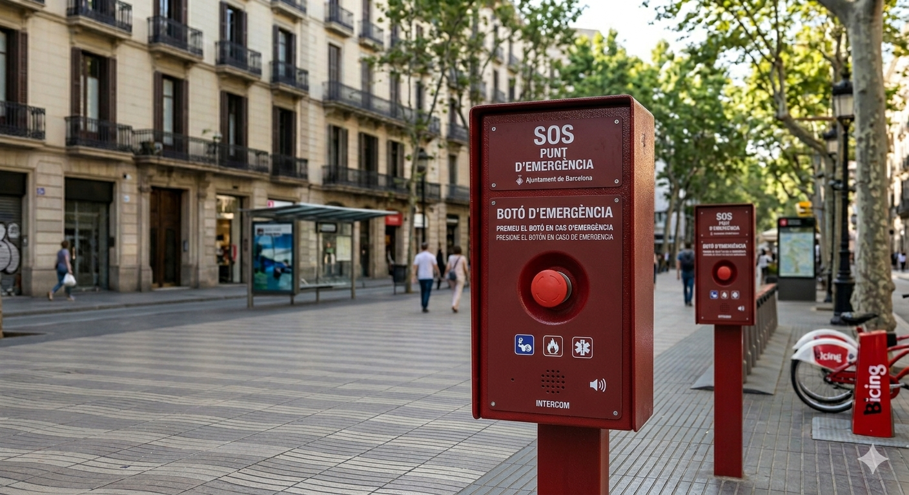
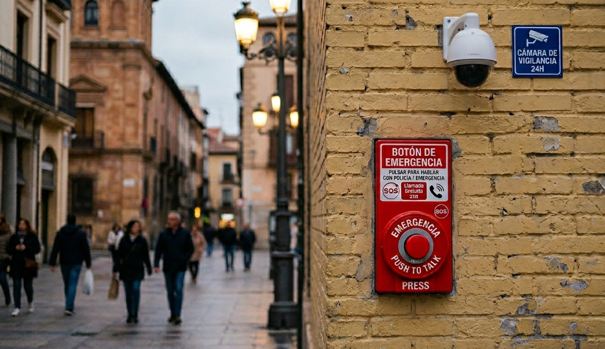
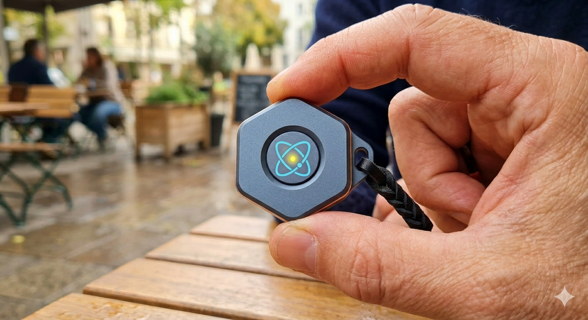

Innovación tecnológica para una ciudad más segura. Geolocalización SOS en tiempo real.
Red de botones SOS con señal de geolocalización constante para alertar instantáneamente a las autoridades.
Terminales de pared para estaciones de transporte y tótems estilo torre para espacios abiertos.
15 puntos críticos en zonas turísticas como La Rambla y el Barrio Gótico.
Acceso gratuito en vía pública y servicios premium de geolocalización privada.

INFO: Nuestros Terminales Modo Torre ya son una realidad en las principales avenidas. Diseñados para ser visibles y accesibles, ofrecen asistencia inmediata a cualquier ciudadano con solo pulsar un botón.
SEGURIDAD: Tu seguridad, siempre a la vista. El Terminal Modo Torre garantiza una conexión directa con los servicios de emergencia en espacios públicos abiertos.

INFO: Optimizamos el espacio urbano con los Terminales Modo Pared. Instalados estratégicamente en fachadas, ofrecen una respuesta rápida sin interrumpir el paso peatonal.
SEGURIDAD: Protección en cada esquina. Cobertura total en zonas de alta afluencia.

INFO: La seguridad te acompaña allá donde vayas. Dispositivo portátil de emergencia.
SEGURIDAD: Innovación en la palma de tu mano para asistencia inmediata.
| ID Nodo | Ubicación | Estado | Actualización |
|---|